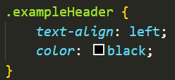

1. What are Class and ID Selectors?
Class and ID are HTML/CSS Selectors that are used to enhance web design
by adding a variety of styles through HTML and CSS interplay. Their
functions are similar, but they are not the same and they serve
different purposes.
This is how you would style ALL the h1 elements in CSS.
But what if you want your initial h1 header to be different? Perhaps,
you want the basic styling to remain the same, but you want to change
the colour or font. This is where assigning a Class or ID comes in
useful.
This is what an h1 header looks like when it has been assigned a Class
and ID.
2.Differences in Class and ID.
The most notable difference between the two Selectors is that you can
use the same Class for multiple elements, and you can use multiple
classes within the same element. On the other hand, ID can only have one
element by that name and each element can only have one ID.
Essentially, ID is more specific to that element. It is easier to
remember this difference when you think of a university cohort: students
are assigned to a shared class, but each student has an ID that is
unique to just them. Students may have multiple classes that they attend
but their ID stays consistent and individual.
Another difference to note is that, in CSS, Classes use a “.” in front
of their name, while IDs use a “#”.

Here is an example of how to use Class and ID in an HTML file and the
corresponding CSS file.
3. But which should you use? Class or ID?
While they serve similar functions, it is important to correctly
identify which Selector to use as it keeps your code clean and makes it
easier to work with.
You should use a Class when you need to use that same Selector more than
once. While an ID Selector can only be used by a single element, Classes
can be assigned to multiple elements and are less specific or unique. As
an ID Selector is more specific, they also take priority over Class.
As you can see in the image above, the header text is red rather than
blue due to the ID being more specific and having priority in the code.
Since these Selectors serve different functions, an element can also
have both a Class and an ID.
In this case, the element has the Class of being a .titleHeader and the
ID of being #firstheader.
An element can have an ID and then multiple Classes or Selectors,
but it is considered best practice to make sure you understand when to
use these Selectors before you begin stacking them, as it can make your
code confusing or hard to navigate.
4. Keeping your code clean and easy to navigate.
As code develops and becomes more complex, it would be in your best
interest to keep your code as neat as possible. When an element has
multiple factors such as h1, Class, and ID, it can become difficult to
navigate.
Above is an example of an element that has multiple styles applied to
it.
Above is an example of a style sheet that primarily uses Class for
different elements. The Class names are specific and easy to navigate to
in case you need to change their styling.
While there is no harm in using h1, h2, or p as your points of style in
CSS, the more complex your code becomes the more you need to think about
HOW your code is organised. Not just for your own sake – but for those
who may need to read through your code.